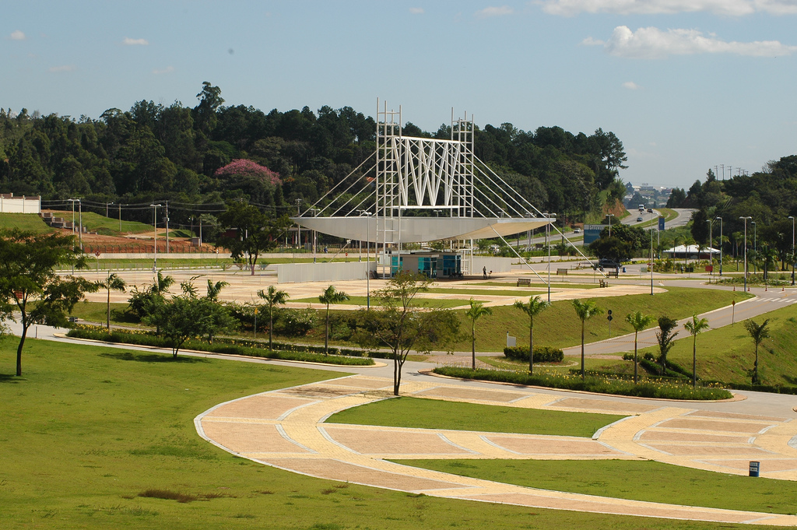
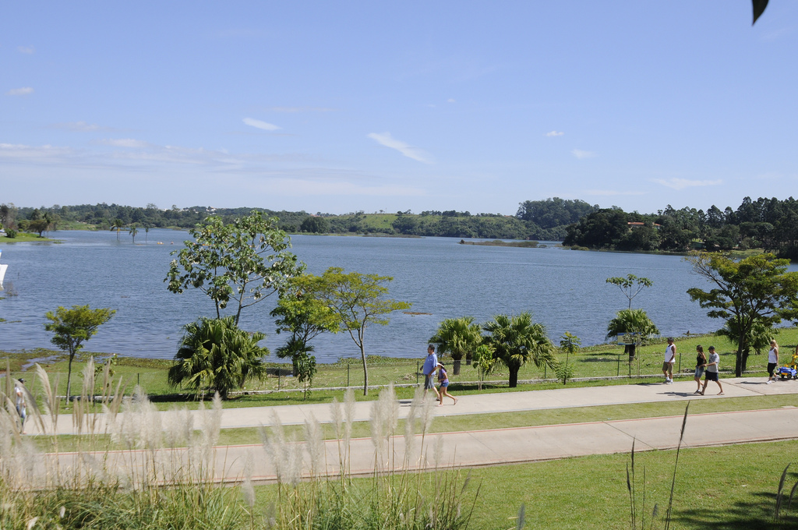
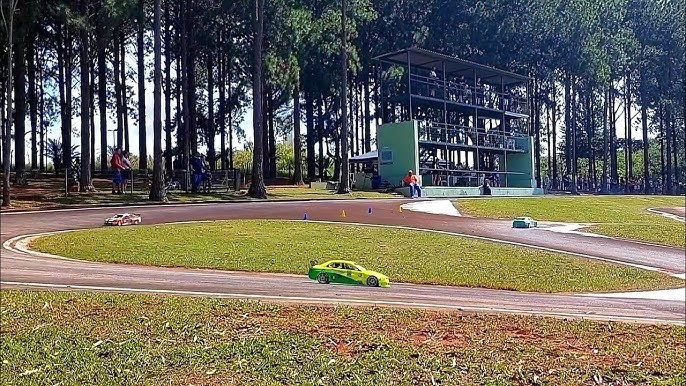
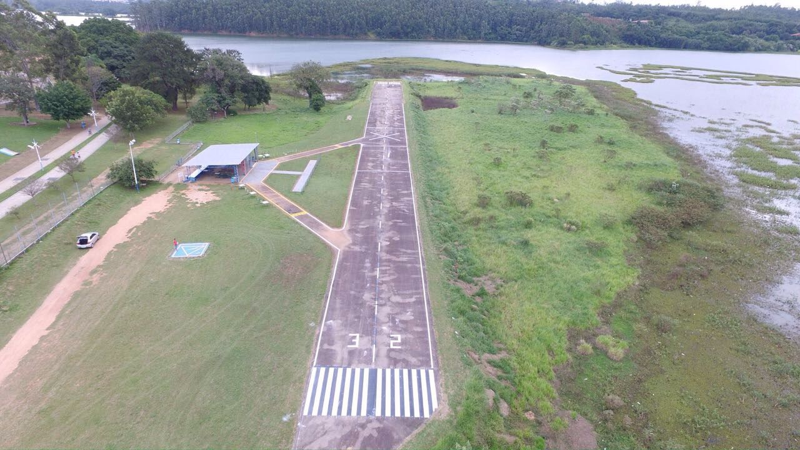
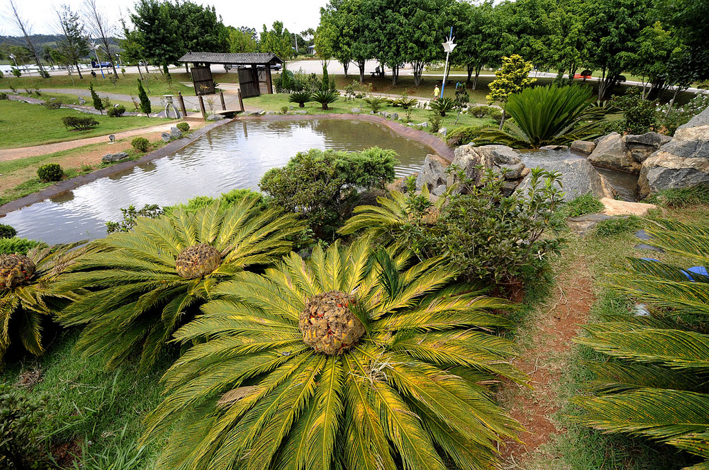
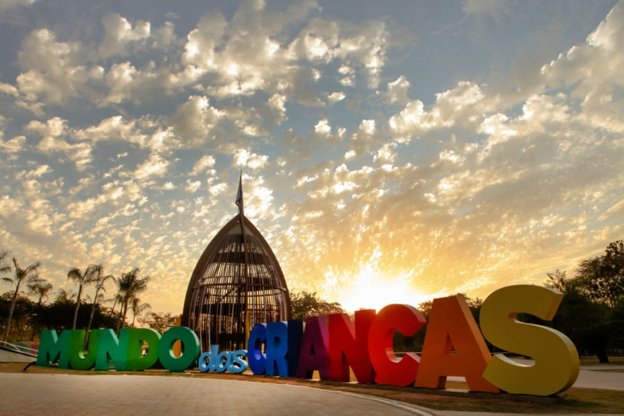
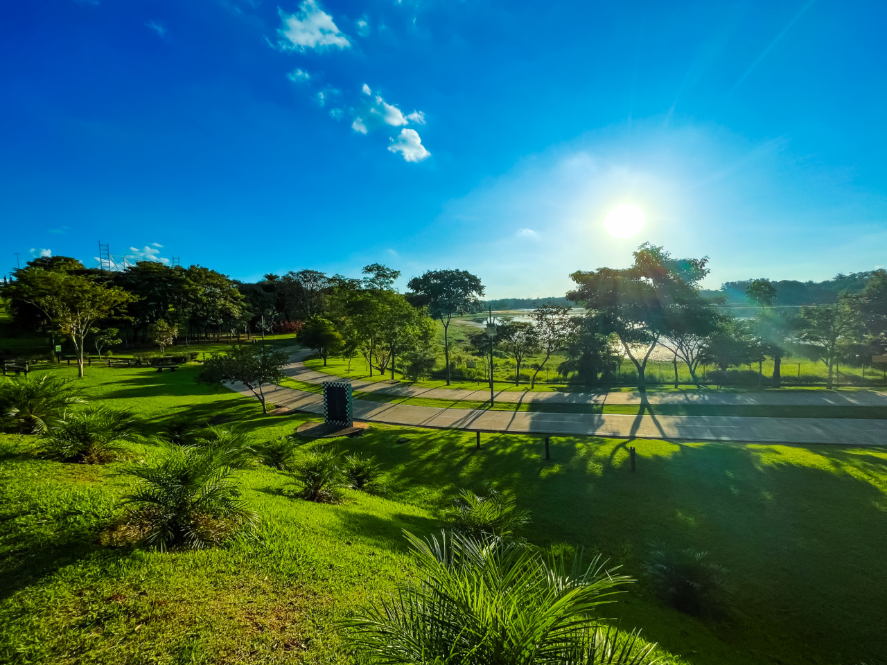

O Parque da Cidade de Jundiaí, inaugurado oficialmente em 21 de abril de 2004, é um marco significativo na preservação ambiental e no lazer da população local. Desenvolvido e construído pela DAE Jundiaí, empresa responsável por sua manutenção, o parque rapidamente se tornou um dos cartões-postais da cidade, atraindo visitantes que buscam um espaço para atividades físicas, lazer e contato direto com a natureza.
Parque da Cidade de Jundiaí
Origem e Propósito
A criação do Parque da Cidade está intrinsecamente ligada à proteção dos recursos hídricos de Jundiaí. Seis anos antes de sua inauguração, em 1998, foi construída a represa de Acumulação, principal manancial de abastecimento do município. Inicialmente, havia a intenção de realizar um reflorestamento ao redor da represa para formar uma mata ciliar protetora. Contudo, em 2001, surgiu a ideia de expandir esse projeto para a construção de um parque que, além de resguardar o manancial, proporcionasse um espaço de lazer e qualidade de vida para a população.
Essa iniciativa visava não apenas a conservação da fauna e flora locais, mas também a criação de uma "barreira natural" que evitasse ocupações irregulares, poluição, erosão e o assoreamento da represa. Dessa forma, o parque desempenha um papel crucial na proteção da qualidade da água que abastece Jundiaí.
Estrutura e Atrações
Com uma área de 500 mil metros quadrados, o Parque da Cidade oferece uma variedade de atrações que atendem a diferentes públicos. Entre as principais instalações estão:
- Pistas de Caminhada e Ciclovias: Espaços destinados à prática de atividades físicas, como caminhadas, corridas e ciclismo.
- Academias ao Ar Livre: Equipamentos de ginástica disponíveis para uso gratuito, incluindo uma academia adaptada para pessoas com deficiência.
- Parquinhos Infantis: Áreas de recreação para crianças, com brinquedos diversos, sendo um dos parquinhos adaptado para cadeiras de rodas ou mobilidade reduzida.
- Jardim Japonês: Um espaço temático com pontes, cursos d'água, quiosque e um Torii, portão tradicional da cultura japonesa, que recentemente passou por obras de revitalização para ampliação e melhorias na infraestrutura.
- Quadras Esportivas: Cinco quadras oficiais, incluindo duas poliesportivas, duas de vôlei de areia e uma de futebol de areia.
- Pistas de Automodelismo e Aeromodelismo: Espaços destinados aos entusiastas dessas modalidades.
- Centro Náutico: Área voltada para atividades aquáticas.
- Quiosques e Áreas para Piquenique: Locais apropriados para refeições ao ar livre e convivência social.



Além dessas atrações, o parque abriga o Programa de Esportes e Atividades Motoras Adaptadas (Peama), que realiza o aluguel de bicicletas a preços acessíveis. Os valores arrecadados são revertidos para o programa, que desde 1996 já atendeu mais de 1.500 pessoas de todas as idades, promovendo mensalmente atividades para mais de 400 participantes.

Evolução e Novas Iniciativas
Em 2024, o Parque da Cidade celebrou seu 20º aniversário, consolidando-se como um dos maiores espaços de lazer gratuito e ao ar livre da região. Para comemorar a data, foi realizada uma grande festa em 21 de abril, com atrações gratuitas e diversas surpresas para os visitantes.
Paralelamente, o Mundo das Crianças, inaugurado em dezembro de 2020 e localizado adjacente ao parque, passou por obras de ampliação que agregaram novidades com foco no meio ambiente. A nova área inclui um espaço de 3 mil metros quadrados destinado aos pets, um lago com prainha e pedalinhos, áreas de convivência, novas ciclovias e pistas de caminhada. Com essa expansão, o complexo formado pelo Parque da Cidade, o Mundo das Crianças e o Jardim Botânico passou a totalizar 1,4 milhão de metros quadrados de área destinada à proteção ambiental, lazer e educação, proporcionando ainda mais qualidade de vida à população de Jundiaí.
Importância Ambiental e Social
O Parque da Cidade desempenha um papel fundamental na conscientização ambiental e na promoção de um estilo de vida saudável. Ao oferecer um espaço onde a população pode interagir com a natureza, o parque incentiva práticas sustentáveis e reforça a importância da preservação dos recursos naturais.
Além disso, ao integrar lazer, educação e conservação ambiental, o parque contribui para o bem-estar social, servindo como um ponto de encontro para famílias, amigos e comunidades, fortalecendo os laços sociais e promovendo a inclusão por meio de suas instalações adaptadas.
Considerações Finais
O Parque da Cidade de Jundiaí é um exemplo exitoso de como a integração entre preservação ambiental e espaços de lazer pode beneficiar uma comunidade. Ao longo de suas duas décadas de existência, o parque não apenas protegeu um recurso hídrico vital, mas também se tornou um local de convivência, aprendizado e bem-estar para milhares de pessoas. Com as recentes expansões e melhorias, reafirma seu compromisso com a sustentabilidade e a qualidade de vida, consolidando-se como um patrimônio valioso para Jundiaí e região.